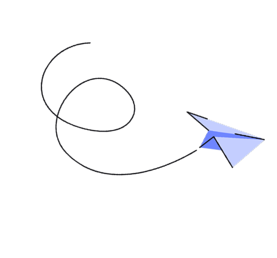
Fast2 is a software initiative from Service Works Global. SWG’s objective is to be the go-to company for property management. They already have a large presence in Sweden with their native software and multiple mobile apps.
Fast2 has two core users, the building managers, and the people that perform the work orders.
They have different contexts and points of interaction. The managers access the system from a stationary
point, usually their office. The inspectors and order workers access the system mostly from the field, but
sometimes they might complete and close the order from the office.
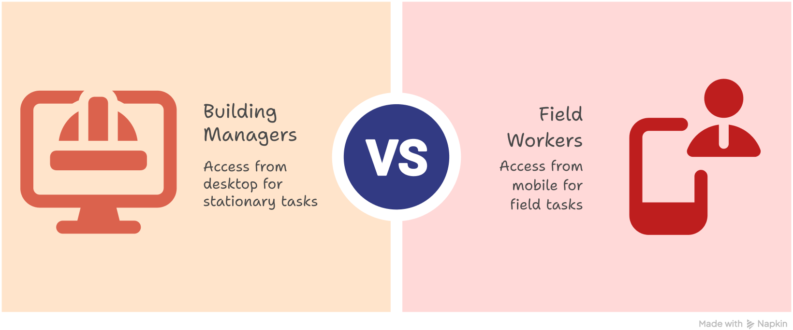
We developed a web app called Fast2 to replace and combine the native software and mobile apps. This reduced
the points of contact and the error input liability.
In the Fast2 web app the users are able to perform all the actions needed for the completion of their job. The
user journeys were simplified mostly by identifying and categorising the functions. So the interface presents
only whichever functions are relevant for the user’s role. This helped with the optimisation and usability of
the user journey, without sacrificing a lot of functions.
The web application also resolved the challenge of managing two distinct user touch-points, mobile and desktop,
by providing a unified experience across platforms.
We were a fixed team working exclusively in the Fast2 web application. We worked on-site together for 2 years, so we were completely in sync.
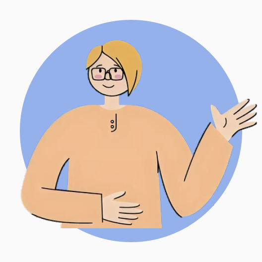
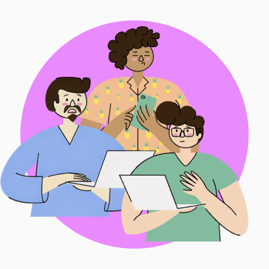

I started with a workshop where we could breakdown the goal and understand the system and its shortcomings.
The outcome of this workshop defined the pain points, the users, and the flow of the processes. From this we
decided that the solution to be worked on would be a web application with role-based access.
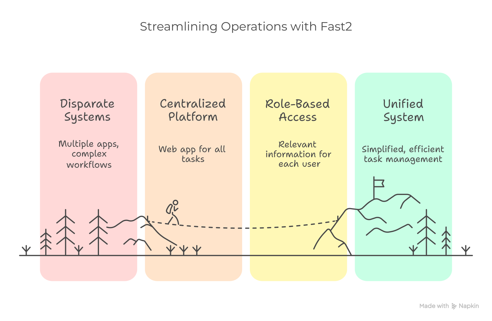
Then I organised a workshop where we established the relationship between the existing software and apps. The
result was the identification and documentation of the most important user flows. With this a roadmap of the
product was created. We then used this information to create a map of the future Web app so everyone would
know the structure and features to be developed.

Considering there was no existing design system, I started a Figma file and defined a colour palette, fonts
(based on the graphic manual), and created the base components, such as buttons, fields, controls,
etc.
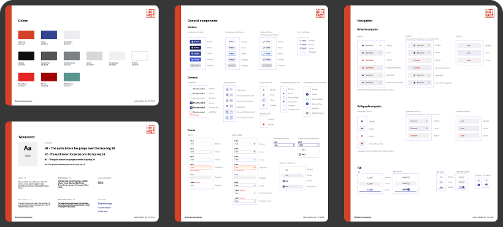
We worked with an agile methodology, so most of the design sprint cycles for the features and flows worked
like this:
1. Research & sketching: I reviewed existing user research and interviewed some
users to begin the design of the flows. I sketched some alternatives to explore different layouts and the
impact they could have when considering breaking points. Then I had a discussion with the team about
feasibility, time, etc.
2. Alternatives: Work in 3-4 medium fidelity wireframe flows. The wireframes
were then showcased to users and stakeholders to get feedback.
3. Refinement: I refined the design into a high fidelity prototype and handed
over to the development team through Figma and/or meetings.
If the feature required changes after implementation I would go back to step one and restart the
cycle.
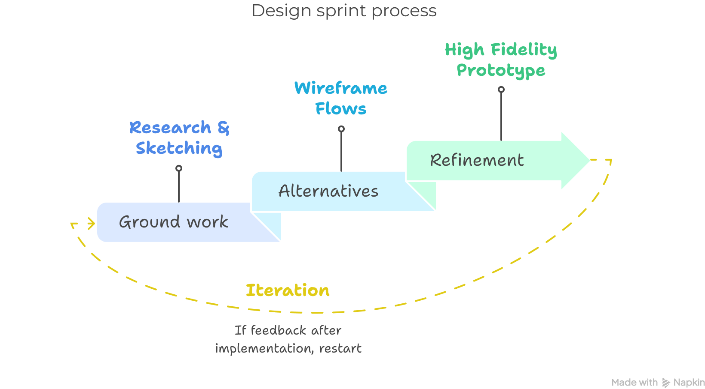
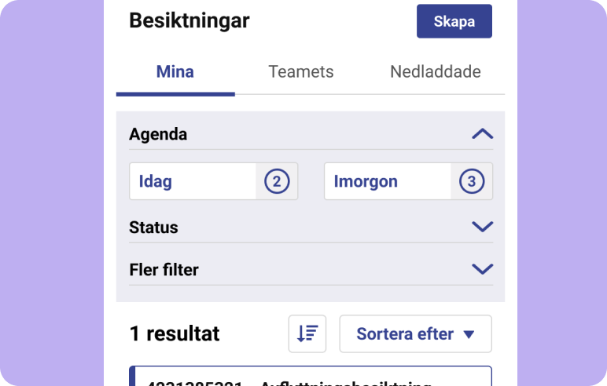
Integrating specific filters to the listing of the orders. Users don’t have to know the order ID to
find
the order they are working on.
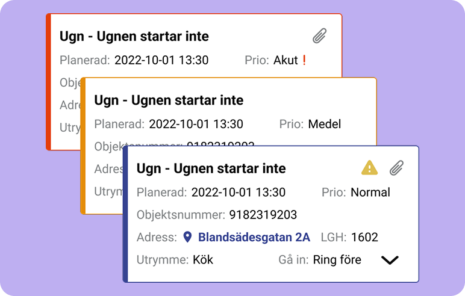
The work orders were designed as accordions so the essential information can be seen instantly.
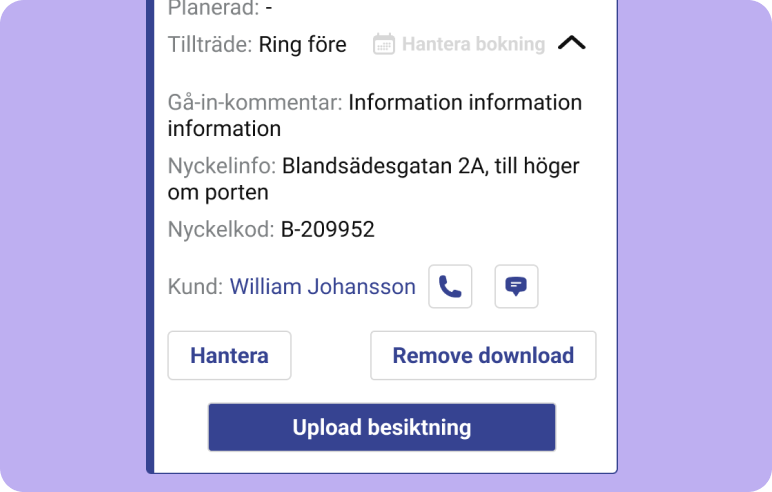
On the order expanded, the client can be contacted, the order finished, among other common
actions.
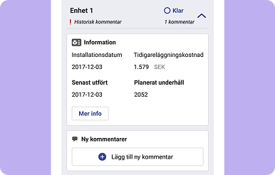
The user can get the information for spaces, protocols and in turn add comments, and confirm the
inspections of elements.
Consider scalability from the start. Consider the possibility of growth from the first flow, using modular components so they are more dynamic and easily changed.
The web app structure is agreed upon and well documented. Then the team is in the same page about the features to develop, and can provide timely input on the design and direction of the project. Makes for less surprises during the process.
Know the big picture. Map all the known processes to have a strategic approach to the creation of the flows. Avoids a lot of re-working.